Docked status bar – Alignment A (flush) Measured: top bar bottom 59px, docked band top 59px → 0px gap at 390, 820 and 1440 in all 4 themes. Before: +3px (390), −9px (820), −13px (1440). Band spans full width like the top bar.
Midnight · 390px 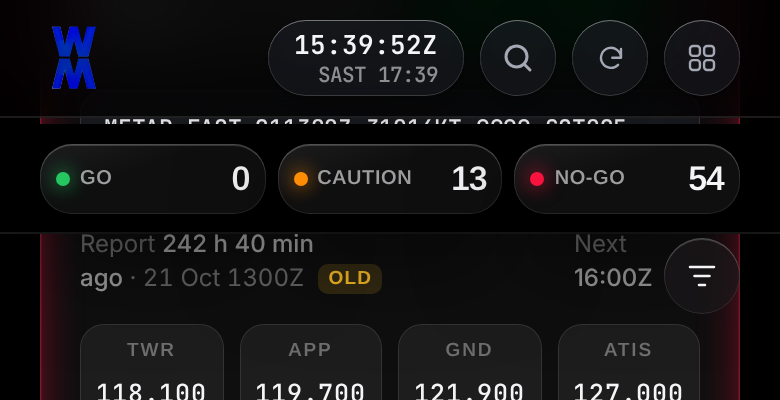
Before: +3px gap (content shows through) 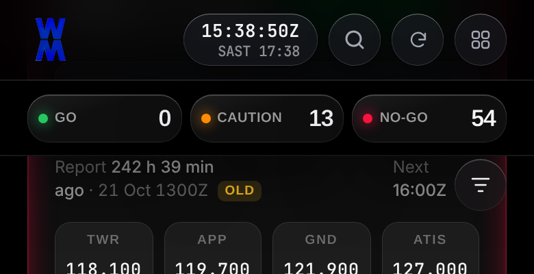
A (flush) : 0px gapMidnight · 820px 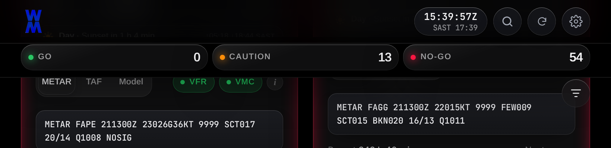
Before: -9px (overlaps top bar) 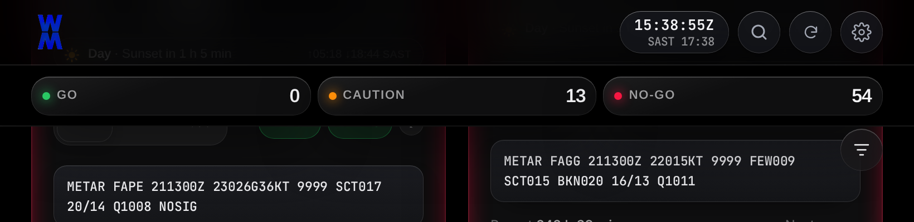
A (flush) : 0px gapAmethyst · 390px 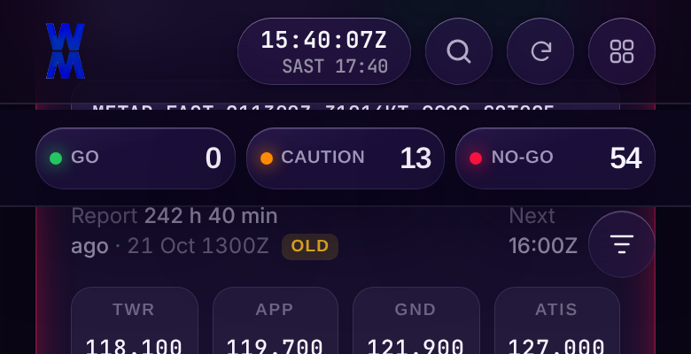
Before: +3px gap (content shows through) 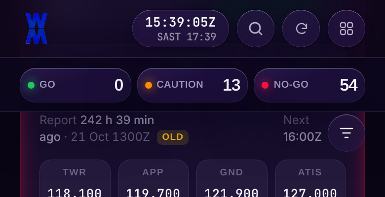
A (flush) : 0px gapAmethyst · 820px 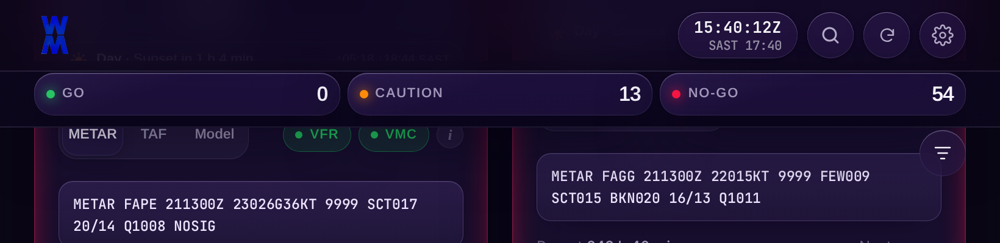
Before: -9px (overlaps top bar) 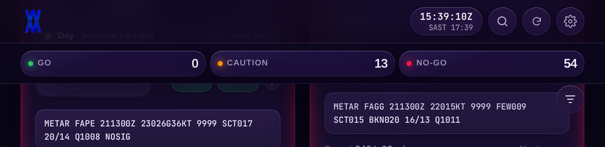
A (flush) : 0px gapPearl · 390px 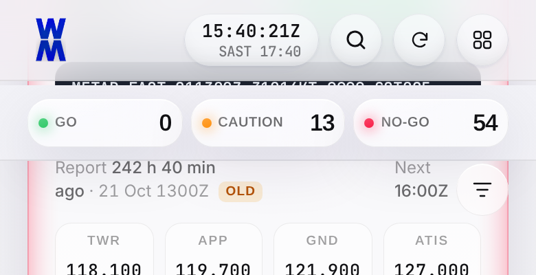
Before: +3px gap (content shows through) 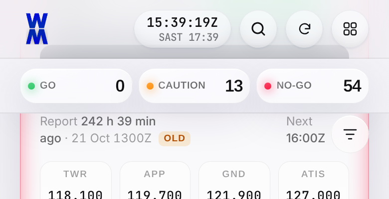
A (flush) : 0px gapPearl · 820px 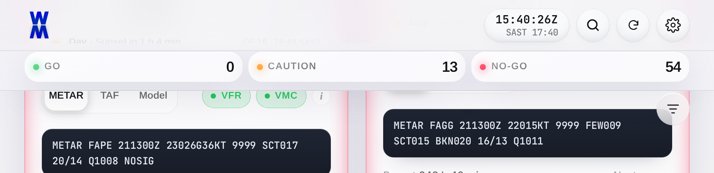
Before: -9px (overlaps top bar) 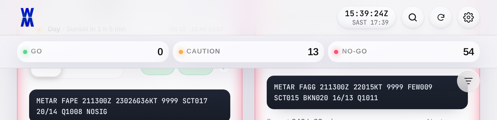
A (flush) : 0px gapBeige · 390px 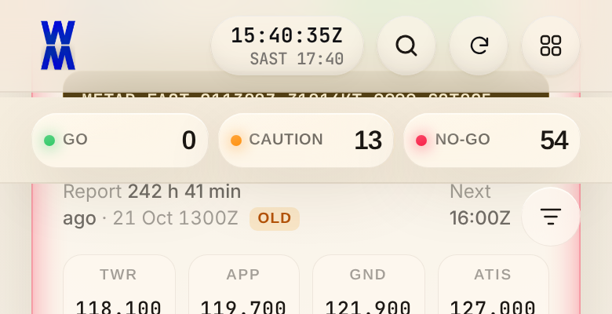
Before: +3px gap (content shows through) 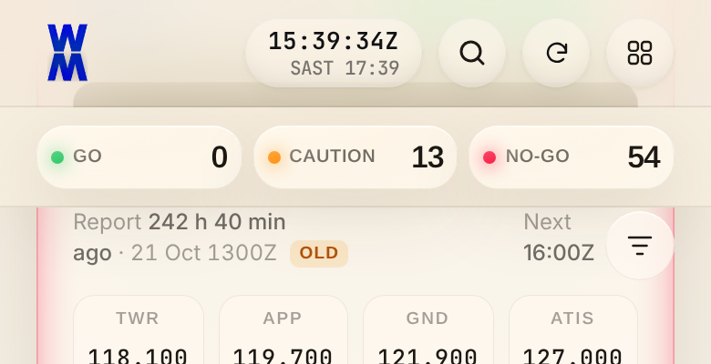
A (flush) : 0px gapBeige · 820px 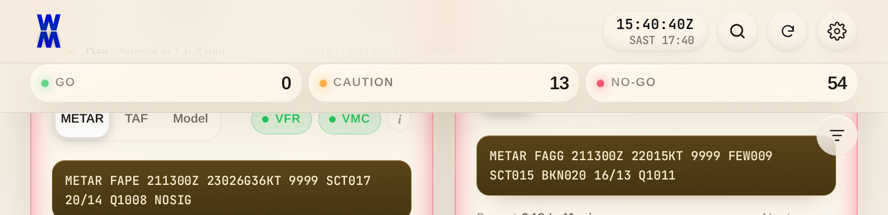
Before: -9px (overlaps top bar) 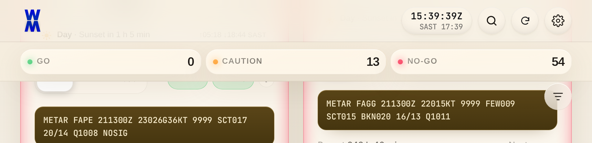
A (flush) : 0px gap